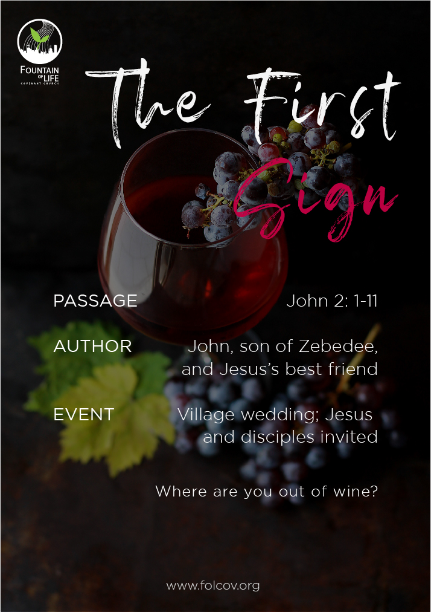
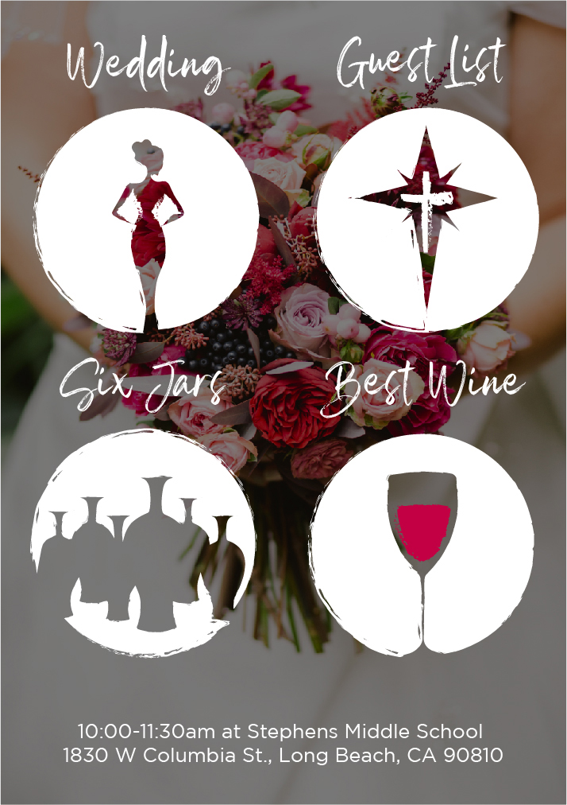
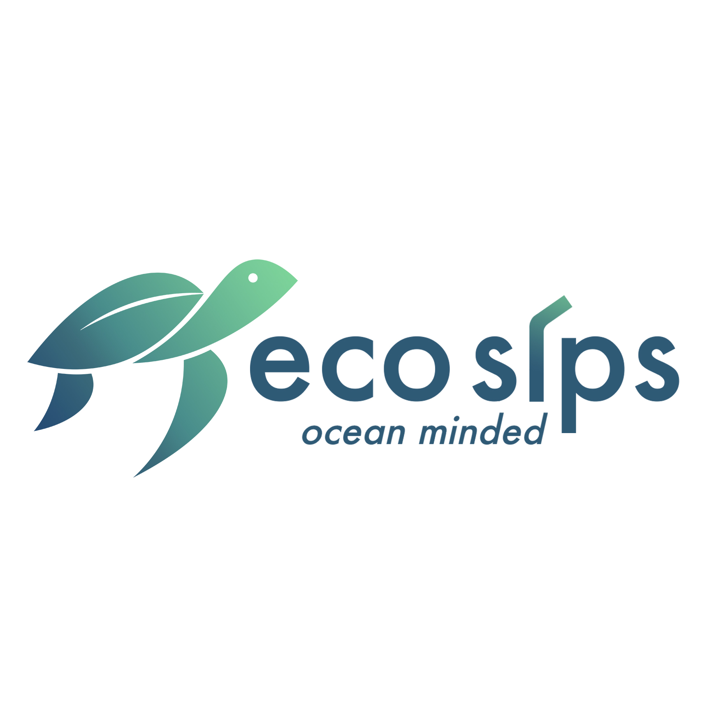
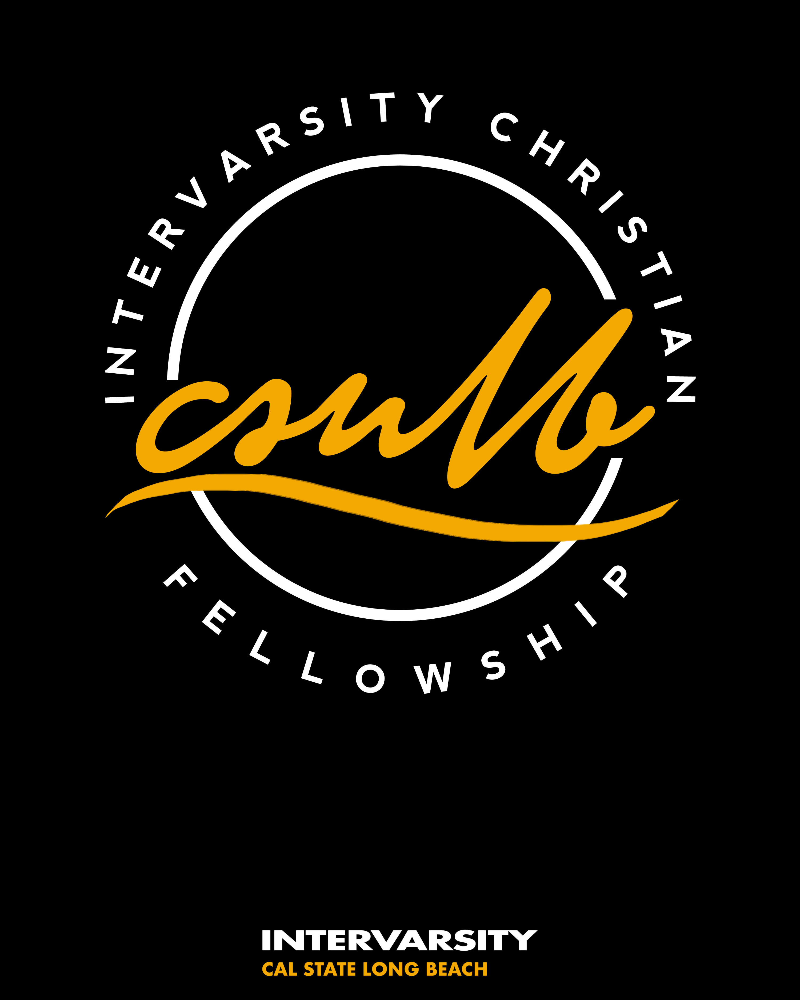
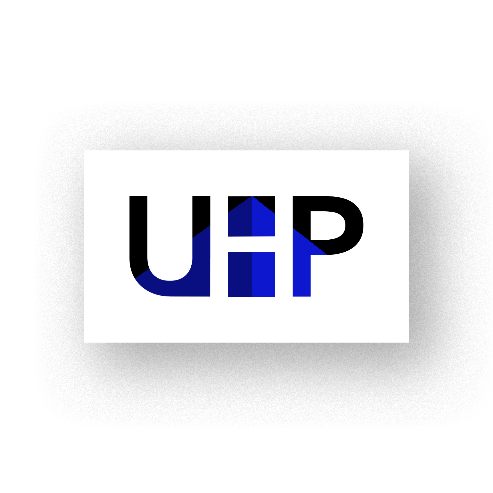
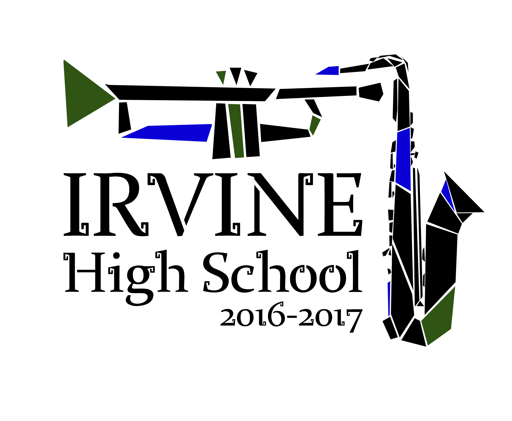

PORTFOLIO
Fountain of Life Covenant Church
front and back of info card
 impact statistics page for annual report

spiritual examination worksheet : : two page spread

spring update newsletter : : cover & back spread, fountain of life spread


NSCC
nscc logo


2019 youth retreat handbook spreads

2018 youth retreat handbook spreads

Ecosips
ecosips banner
 >ecosips motion graphicsCSULB Intervarsity
csulbiv shirt design
UHP
university honors program logo entry
IHS Marching Band
irving high school marching band graphic 2016
About Steven
Steven is a Taiwanese-American artist who studied at California State University, Long Beach's Illustration Program. From a young age, he has been passionate about expressing his creativity through various forms of art, ranging from illustration to animation to design. During his last two years of high school, he attended the Ryman Arts Program to further develop his skills in drawing and painting. He is experienced in figure drawing, illustration, character design, visual development, animation, graphic design, and web design. Steven is proficient in Adobe applications such as Photoshop, Illustrator, After Effects, and Premiere, and Autodesk applications Maya and Sketchbook. He also has knowledge of HTML, CSS, and Javascript.
Contact
Get in touch
Email : : stevenyu615@gmail.com